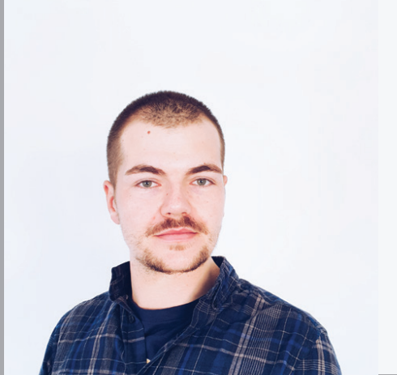

Vermessungsingenieur seit 2011. Viel erfahrung in Innen und Außendienst.
Schul und Berufsausbildung
- Universität „Sv. Kiril und Metodij“- Skopje, Fakultät der Geodäsie.
Bachelor-Abschluss als diplomierter Vermessungsiningenieur,
180 ECTS Kreditpunkte.
- Universität „Sv. Kiril und Metodij“- Skopje, Fakultät der Geodäsie.
Master-Abschluss in Management mit Immobilien, 300 ECTS
Kreditpunkte.
Sonstige Ausbildung:
- fortschrittliches Niveau in Deutsch;
- fortschrittliches Niveau in Englisch;
- Cambridge First Certificate in Englisch;
- andere fließende Sprachkentnisse: Mazedonisch,
Bulgarisch,
Kroatisch und Serbisch;
- Führerschein: Kategorie B
Berufserfahrung
-
September 2011 bis Mai 2012-
Firmenname : DELA Systems
Ort: Stadt Skopje,
Republik Mazedonien
-
November 2012 bis November 2014-
Firmenname : Geoproekt Inzenering
Ort: Stadt Skopje,
Republik Mazedonien
-
November 2014 bis Mai 2017-
Firmenname: Vinica Premer
Ort: Stadt Vinca,
Republik Mazedonien
-
October 2017 bis Februar 2020-
Firmenname : Vermessungsbüro
Stollenwerk und Burghof
Ort: Stadt Bergheim,
NRW Deutschland
-
Februar 2020 bis Mai 2021-
Firmenname : Josef Thielen, ÖbVI
Ort: Stadt Köln, NRW Deutschland
-
Mai 2021 bis Heute-
Firmenname : Planungsbüro Kellner
Ort: Stadt Bad Sta�elstein,
Bayern Deutschland.
Persönliche Fähigkeiten
-
kooperativ, unternehmerisch, selbständig, zuverlässig, analytisch;
-
teamfähig, Probleme durch Kommunikation lösen, in Bewegung sein.